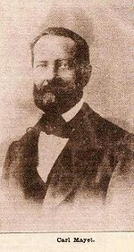

Kieseritzky was born in Dorpat (Tartu), Livonia, Russian Empire into a Baltic German family. From 1825 to 1829 he studied at the University of Dorpat, and then worked as a mathematics teacher like Anderssen. From 1838 to 1839, Kieseritzky played a correspondence match against Carl Jaenisch - unfinished, because he had to leave for Paris. In Paris he became a chess professional, giving lessons or playing games for five francs an hour, and editing a chess magazine.
Elijah Williams
Elijah Williams (7 October 1809 – 8 September 1854) was an eminent British chess player of the mid-19th century. The first president of the Clifton Chess Club, and publisher of a book of games from the Divan Club.
He was accused by British player Howard Staunton of taking an average of 2½ hours per move during some matches, a strategy thought to cause opponents to lose their focus on the match, earning him the nickname of the Bristol Sloth. According to Staunton, following a particularly dilatory performance by Williams in the London 1851 tournament, a 20 minute per turn time limit was adopted for standard play the next year. However other sources contradict this viewpoint and indeed it was not uncommon for Staunton to attribute his losses to the intolerable dilatory play of his opponents. Staunton is quoted as remarking while playing against Williams, "... Elijah, you're not just supposed to sit there – you're supposed to sit there and think!"
A musical tune "The Bristol Sloth" was composed by guitarist Leo Kottke (who also applied the term 'sitzkrieg' in describing Williams' playing style).
Williams died in London.
Johann Löwenthal
Johann Jacob (János Jakab) Löwenthal (15 July 1810, Budapest, Hungary – 24 July 1876, Hastings, England)[1] was a professional chess master.
Löwenthal was born in Budapest, the son of a Jewish merchant. He was educated at the gymnasium of his native city. In 1846, he won a match against Carl Hamppe in Vienna (+5 -4 =0). He received a civil appointment under the administration of Lajos Kossuth in 1848. On the downfall of the latter, Löwenthal was expelled from Hungary, and he emigrated to America (1849). In 1851 he went to London, and thenceforward resided permanently in England. At the Manchester tourney of 1857 Löwenthal defeated Adolf Anderssen for first place.
For a time, Löwenthal served as club secretary of the St. George's Chess Club in London. He taught chess, and invented the first demonstration board. He helped organize an international tournament in 1862, and then published a tournament book.
Löwenthal was for some time chess editor of The Illustrated News of the World and of The Era. He was editor also of The Chess Players' Magazine (1863–67). In 1860 he published Morphy's Games of Chess, with Analytical and Critical Notes.[2]

Carl Mayet
Carl (Karl) Mayet (August 11, 1810, Berlin – May 18, 1868, Stettin, now Szczecin) was a German chess master.
He was one of the most original of the Berlin Pleiades (the seven stars of German chess).[1]
In 1839, Mayet defeated Jozsef Szen in a match with (+3-2=1). In 1845, he drew a match with Augustus Mongredien with (+3-3). In 1847, he defeated A. von der Goltz in a match (+14-9=1), but then lost a match with his cousin Wilhelm Hanstein (+5-12=1). In 1848, he lost a match to Daniel Harrwitz (+2-5=2). In the London 1851 chess tournament, he was knocked out in round 1 when he lost to Hugh Alexander Kennedy with two losses. In 1851, he lost a match to Adolf Anderssen in Berlin with four losses. In 1852, he lost a match to Frederic Deacon (2-5).
In 1853, he took third place in the first unofficial Berlin Championship, behind Jean Dufresne and Max Lange. In 1853, he lost a match to Dufresne (+5-7). In 1855, he lost to Anderssen (+6-14=1). In 1856, he lost to T. Wiegelmann (2-4) in the 1856 Berlin Knockout Tournament. In 1859, he lost a match to Anderssen (+1-7). In 1865, he lost a match to Anderssen (+2-5=1). In 1866, he lost a match to Gustav Neumann (-6=1).
Function Two - Date Picker
Function Three - Style switching
Currently active stylesheet:
styles1styles2styles3
The page and the version of ScrollPane give to us on the assignment 3, does not seem to work with the lastest jquery 1.6.4. This implementation will not appear if you have a wide window when you load the page
Vertical only
The history of chess spans some 1500 years. The earliest predecessors of the game originated in India, before the 6th century AD. From India, the game spread to Persia. When the Arabs conquered Persia, chess was taken up by the Muslim world and subsequently spread to Southern Europe. In Europe, chess evolved into its current form in the 15th century. In the second half of the 19th century, modern chess tournament play began, and the first world Chess Championship was held in 1886. The 20th century saw great leaps forward in chess theory and the establishment of the World Chess Federation (FIDE). Developments in the 21st century include use of computers for analysis, which originated in the 1970s with the first programmed chess games on the market. Online gaming appeared in the mid 1990's.
The precursors of chess probably originated in India during the Gupta empire,where its early form in the 6th century was known as chaturaṅga, which translates as "four divisions (of the military)": infantry, cavalry, elephantry, and chariotry, represented by the pieces that would evolve into the modern pawn, knight, bishop, and rook, respectively.
Chess was introduced to Persia from India and became a part of the princely or courtly education of Persian nobility.[7] In Sassanid Persia around 600 the name became chatrang, which subsequently evolved to shatranj, and the rules were developed further. Players started calling "Shāh!" (Persian for "King!") when attacking the opponent's king, and "Shāh Māt!" (Persian for "the king is helpless" – see checkmate) when the king was attacked and could not escape from attack. These exclamations persisted in chess as it traveled to other lands.
The game was taken up by the Muslim world after the Islamic conquest of Persia, with the pieces largely keeping their Persian names. The Moors of North Africa rendered Persian "shatranj" as shaṭerej, which gave rise to the Spanish acedrex, axedrez and ajedrez; in Portuguese it became xadrez, and in Greek zatrikion, but in the rest of Europe it was replaced by versions of the Persian shāh ("king"). Thus, the game came to be called ludus scacchorum or scacc(h)i in Latin, scacchi in Italian, escacs in Catalan, échecs in French (Old French eschecs); schaken in Dutch, Schach in German, szachy in Polish, šahs in Latvian, skak in Danish, sjakk in Norwegian, schack in Swedish, šakki in Finnish, šah in Slovene, sakk in Hungarian and şah in Romanian; there are two theories about why this change happened:
From the exclamation "check" or "checkmate" as it was pronounced in various languages.
From the first chessmen known of in Western Europe (except Iberia and Greece) being ornamental chess kings brought in as curios by Muslim traders.
The Mongols call the game shatar, and in Ethiopia it is called senterej, both evidently derived from shatranj.
Chess spread directly from the Middle East to Russia, where chess became known as шахматы (shakhmaty, treated as a plural).
The game reached Western Europe and Russia by at least three routes, the earliest being in the 9th century. By the year 1000 it had spread throughout Europe.[8] Introduced into the Iberian Peninsula by the Moors in the 10th century, it was described in a famous 13th century manuscript covering shatranj and backgammon and dice named the Libro de los juegos.
Chess spread throughout the world and many variants of the game soon began taking shape.[9] Buddhist pilgrims, Silk Road traders and others carried it to the Far East where it was transformed and assimilated into a game often played on the intersection of the lines of the board rather than within the squares.[9][10] Chaturanga reached Europe through Persia, the Byzantine empire and the expanding Arabian empire.[11] Muslims carried chess to North Africa, Sicily, and Iberia by the 10th century.
The game was developed extensively in Europe, and by the late 15th century, it had survived a series of prohibitions and Christian Church sanctions to almost take the shape of the modern game. Modern history saw reliable reference works,[13] competitive chess tournaments[14] and exciting new variants which added to the game's popularity, further bolstered by reliable timing mechanisms (first introduced in 1861), effective rules and charismatic players.
The earliest precursor of modern chess is a game called chaturanga, which flourished in India by the 6th century, and is the earliest known game to have two essential features found in all later chess variations — different pieces having different powers (which was not the case with checkers and go), and victory depending on the fate of one piece, the king of modern chess.[9] Other game pieces (speculatively called "chess pieces") uncovered in archaeological findings are considered as coming from other, distantly related, board games, which may have had boards of 100 squares or more.[9] Findings in the Mohenjo-daro and Harappa (2600–1500 BCE) sites of the Indus Valley Civilization show a prevalence of a board game that resembles chess.[16]
Chess was designed for an ashtāpada (Sanskrit for "having eight feet", i.e. an 8x8 squared board), which may have been used earlier for a backgammon-type race game (perhaps related to a dice-driven race game still played in south India where the track starts at the middle of a side and spirals in to the center).[17] Ashtāpada, the uncheckered 8×8 board served as the main board for playing Chaturanga.[18] Other Indian boards included the 10×10 Dasapada and the 9×9 Saturankam.[18] Traditional Indian chessboards often have X markings on some or all of squares a1 a4 a5 a8 d1 d4 d5 d8 e1 e4 e5 e8 h1 h4 h5 h8: these may have been "safe squares" where capturing was not allowed in a dice-driven backgammon-type race game played on the ashtāpada before chess was invented.[17]
The Cox-Forbes theory, started in the late 19th century, mainly from the works of Captain Hiram Cox and Duncan Forbes, proposed that the four-handed game chaturaji was the original form of chaturanga.[19] Other scholars dispute this and say that the two-handed form was the first.[20]
In Sanskrit, "chaturanga" (चतुरङ्ग) literally means "having four limbs (or parts)" and in epic poetry often means "army" (the four parts are elephants, chariots, horsemen, foot soldiers).[7] The name came from a battle formation mentioned in the Indian epic Mahabharata.[9] The game Chaturanga was a battle simulation game[7] which rendered Indian military strategy of the time.[21]
Some people formerly played chess using a die to decide which piece to move. There was an unproven theory that chess started as this dice-chess and that the gambling and dice aspects of the game were removed because of Hindu religious objections.[22]
Scholars in areas to which the game subsequently spread, for example the Arab Abu al-Hasan 'Alī al-Mas'ūdī, detailed the Indian use of chess as a tool for military strategy, mathematics, gambling and even its vague association with astronomy.[23] Mas'ūdī notes that ivory in India was chiefly used for the production of chess and backgammon pieces, and asserts that the game was introduced to Persia from India, along with the book Kelileh va Demneh, during the reign of emperor Nushirwan.[23]
In some variants, a win was by checkmate, or by stalemate, or by "bare king" (taking all of an opponent's pieces except the king).
In some parts of India the pieces in the places of the Rook and Knight and Bishop were renamed by words meaning (in this order) Boat, Horse, Elephant, or Elephant, Horse, Camel, but keeping the same moves.[17]
In early chess the moves of the pieces were:
King: as now.
Queen: one square diagonally, only.
Bishop:
In the version that went into Persia: two squares diagonally (no more or less), but could jump over a piece between
In a version sometimes found in India in former times: two squares sideways or front-and-back (no more or less), but could jump over a piece between.
In versions found in Southeast Asia: one square diagonally, or one square forwards.
Knight: as now.
Rook: as now.
Pawn: one square forwards (not two), capturing one square diagonally forward; promoted to queen only.
Two Arab travelers each recorded a severe Indian chess rule against stalemate[24]:
A stalemated player thereby at once wins.
A stalemated king can take one of the enemy pieces that would check the king if the king moves.
Horizontal only
The Karnamak-i Ardeshir-i Papakan, a Pahlavi epical treatise about the founder of the Sassanid Persian Empire, mentions the game of chatrang as one of the accomplishments of the legendary hero, Ardashir I, founder of the Empire.[26] The oldest recorded game in chess history is a 10th century game played between a historian from Baghdad and a pupil.[11]
A manuscript explaining the rules of the game called "Matikan-i-chatrang" (the book of chess) in Middle Persian or Pahlavi still exists[citation needed].
In the 11th century Shahnameh, Ferdowsi describes a Raja visiting from India who re-enacts the past battles on the chessboard.[23] A translation in English, based on the manuscripts in the British Museum, is given below:[26]
One day an ambassador from the king of Hind arrived at the Persian court of Chosroes, and after an oriental exchange of courtesies, the ambassador produced rich presents from his sovereign and amongst them was an elaborate board with curiously carved pieces of ebony and ivory. He then issued a challenge:
"Oh great king, fetch your wise men and let them solve the mysteries of this game. If they succeed my master the king of Hind will pay tribute as an overlord, but if they fail it will be proof that the Persians are of lower intellect and we shall demand tribute from Iran."
The courtiers were shown the board, and after a day and a night in deep thought one of them, Bozorgmehr, solved the mystery and was richly rewarded by his delighted sovereign.
(One recent chess book author thought that this story may be true, and that Bozorgmehr likely found the rules by bribing the Indian envoys.)
The Shahnameh goes on to offer an apocryphal account of the origins of the game of chess in the story of Talhand and Gav, two half-brothers who vie for the throne of Hind (India). They meet in battle and Talhand dies on his elephant without a wound. Believing that Gav had killed Talhand, their mother is distraught. Gav tells his mother that Talhand did not die by the hands of him or his men, but she does not understand how this could be. So the sages of the court invent the game of chess, detailing the pieces and how they move, to show the mother of the princes how the battle unfolded and how Talhand died of fatigue when surrounded by his enemies.[27] The poem uses the Persian term "Shāh māt" (check mate) to describe the fate of Talhand.[28]
The appearance of the chess pieces had altered greatly since the times of chaturanga, with ornate pieces and chess pieces depicting animals giving way to abstract shapes.[29] The Islamic sets of later centuries followed a pattern which assigned names and abstract shapes to the chess pieces, as Islam forbids depiction of animals and human beings in art.[29] These pieces were usually made of simple clay and carved stone.[29]
Both
China
As a strategy board game played in China, chess is believed to have been derived from the Indian Chaturanga.[30] Chaturanga was transformed and assimilated into the game xiangqi where the pieces are placed on the intersection of the lines of the board rather than within the squares.[9] The object of the Chinese variation is similar to Chaturanga, i.e. to render helpless the opponent's king, sometimes known as general.[30] Chinese chess also borrows elements from the game of Go, which was played in China since at least the 6th century BC.[30] Owing to the influence of Go, Chinese chess is played on the intersections of the lines on the board, rather than in the squares.[30] Chinese chess pieces are usually flat and resemble those used in checkers, with pieces differentiated by writing their names on the flat surface.[30]
An alternative origin theory contends that chess arose from Xiangqi or a predecessor thereof, existing in China since the 2nd century BC.[31] David H. Li, a retired accountant, professor of accounting and translator of ancient Chinese texts, hypothesizes that general Han Xin drew on the earlier game of Liubo to develop an early form of Chinese chess in the winter of 204–203 BC.[31] The German chess historian Peter Banaschak, however, points out that Li's main hypothesis "is based on virtually nothing". He notes that the "Xuanguai lu," authored by the Tang Dynasty minister Niu Sengru (779–847), remains the first real source on the Chinese chess variant xiangqi.[32]
A prominent variant of chess in East Asia is the game of Shogi, transmitted from India to China and Korea before finally reaching Japan.[33] The two distinguishing features of Shogi are: 1) The captured pieces may be reused by the captor and played as a part of the captor's forces, and 2) Pawns capture as they move, one square straight ahead.[33]
Chess is recorded from Mongolian-inhabited areas, where the pieces are now called:
King: - Noyon - Ноён - lord
Queen - Bers / Nohoi - Бэрс / Нохой - dog (to guard the livestock)
Bishop: - Temē - Тэмээ - camel
Knight- Morĭ - Морь - horse
Rook - Tereg - Тэрэг - cart
Pawn - Hū - Хүү - boy (the piece often showed a puppy)
Names recorded from the 1880s by Russian sources, quoted in Murray,[17] among the Soyot people (who at the time spoke the Soyot Turkic language) include: merzé (dog), täbä (camel), ot (horse), ōl (child) and Mongolian names for the other pieces.
The change with the Queen is likely due to the Arabic word firzān or Persian word farzīn (= "vizier") being confused with Turkic or Mongolian native words (merzé = "mastiff", bar or bars = "tiger", arslan = "lion").[17]
Chess in Mongolia is now played following the usual international rules.
Chess was also recorded from the Yakuts, Tunguses, and Yukaghirs; but only as a children's game among the Chukchi. Chessmen have been collected from the Yakutat people in Alaska, having no resemblance to European chessmen, and thus likely part of a chess tradition coming from Siberia.[17]
Chess passed from Persia to the Arab world, where its name changed to Arabic shatranj. From there it passed to Western Europe, probably via Spain.
Over the centuries, features of European chess (e.g. the modern moves of Queen and Bishop, and castling) found their way via trade into Islamic areas. Murray's[17] sources found the old moves of Queen and Bishop still current in Ethiopia.
London 1851 was the first international chess tournament. The tournament was conceived and organised by English player Howard Staunton, and marked the first time that the best chess players in Europe would meet in a single event. Adolf Anderssen of Germany won the sixteen-player tournament, earning him the status of the best player in Europe.
In May 1851, London staged the Great Exhibition to showcase British industry and technology, and London's thriving chess community felt obliged to do something similar for chess. Howard Staunton proposed and then took the lead in organizing the first ever international tournament, to be held at the same time.[4] He thought the Great Exhibition presented a unique opportunity because the difficulties that obstructed international participation would be greatly reduced, for example it would be easier for contestants to obtain passports and leave from work.
In 1848 a letter had been published in which Ludwig Bledow proposed that he and von der Lasa should organize in Trier (Germany) an international tournament whose winner should be recognized as the world champion (Bledow died in 1846; it is not known why publication was delayed).News of this may also have motivated Staunton to organize the London International tournament.
Staunton and his colleagues had ambitious objectives for this tournament, including convening a "Chess Parliament" to: complete the standardization of the moves and other rules, as there were still very small national differences and a few self-contradictions; to standardize chess notation; to agree time limits, as many players were notorious for simply "out-sitting" opponents. Staunton also proposed the production of a compendium showing what was known about chess openings, preferably as a table. Since he thought there would not be time for a single "Chess Parliament" session to handle this as well, he suggested further congresses, some perhaps including knowledgeable enthusiasts of below top-class playing strength, and a review process for dealing with contentious issues and possible mistakes in earlier decisions.
Before the tournament started two commentators wrote that the winner should be regarded as "the World’s Chess Champion"; one was Captain Hugh Alexander Kennedy, one of the tournament's organizers and competitors, while the other was the Liberty Weekly Tribune in Missouri. However there is no indication that crowning a world champion was a formal objective of the tournament.
Tournament
The tournament was organised as single elimination matches, with the eight losers in the first round being dropped from the tournament. Each first-round match was a best-of-three games, draws not counting. Subsequent rounds were best-of-seven, and losers played consolation matches. The pairings were made by chance, i.e. there was no seeding system of the type commonly used in tennis tournaments. Kieseritsky, Bird, and Löwenthal all lost in the first round. Anderssen beat Staunton soundly, 4–1 in the third-round semi-final. In the fourth-round final Anderssen beat Wyvill to take first place. Wyvill had had a relatively easy draw in the tournament to finish second. Staunton suffered a bitter defeat to Williams in the last round consolation match to finish a disappointing fourth.Winner of the tournament
Despite the obvious flaws in the knockout format of the tournament, the outcome was just as Anderssen was the best player.As provided by the rules of the tournament, Staunton immediately challenged Anderssen to a twenty-one-game match for a £100 stake. Anderssen agreed to the match, but could not play right away as he had been away from Germany and his job as a school teacher for over two months. In addition Staunton was physically unfit for an immediate contest. The proposed match was never played.
As a result of winning this tournament Anderssen was popularly recognised as Europe's best player, although as far as is known he was never described as "world champion". The idea of a world chess champion had been current at least since 1840, and the earliest known use of the term "world champion" is in 1845, referring to Staunton and published in Staunton's Chess Players' Chronicle. Wilhelm Steinitz was widely recognized as "world champion" in the 1870s, but the first formal contest for the world title was the 1886 match between Steinitz and Johannes Zukertort.
Staunton wrote the tournament book, which he titled The Chess Tournament (1852). Although an excellent description of the event, it was marred by ill grace with which he received Anderssen's victory.[14] However Staunton's description of Anderssen as Germany's second best player after Anderssen won the 1851 International tournament may have been reasonable on the basis of what is now known about von der Lasa's skill, and Anderssen's playing strength had surged in the months preceding the tournament, as a result of training matches against strong players in Germany.
Staunton blamed his poor showing on the strain of his duties in organising the tournament, and also thought that he suffered from a weak heart since an illness in 1844. He condemned the pursuit of chess as a profession, writing
Chess never was, and while society exists, never can be a profession. It may to a great extent strengthen the mind of the professional man, but it must never become the object of his life. It is because its true character has been lost sight of by the zealous or the mercenary, that victory at any cost has become a more important object than the advancement of the science.
At least in part, this was the complaint of an ungracious loser, as most of Staunton's income was derived from his skill at chess. By this time Staunton was also a successful scholar with a long-term contract to produce editions of Shakespeare's plays.
Staunton was also concerned with the lack of time limits on play. After some experimentation, time controls would become standard in all serious tournaments some years later. The weakness of the knockout format, a kind of hybrid between match and tournament play, was eliminated by adopting the round-robin format beginning with the London 1862 tournament.
The famous Immortal Game, Anderssen–Kieseritsky, London 1851, was played as an offhand game during a break in this tournament. It was not one of the games of their first-round match.
The London Chess Club, which had fallen out with Staunton and his colleagues, organized a tournament that was played a month later and had a multi-national set of players (many of whom had competed in the International tournament), and the result was the same - Anderssen won.